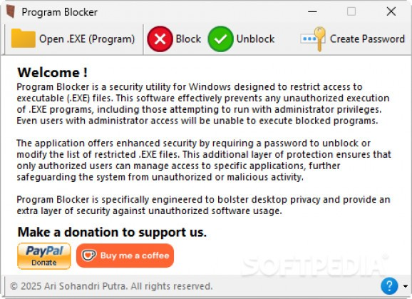

Password-protect executable files to prevent unauthorized access with a simple encryption step.
Program Blocker is a lightweight and portable application designed to help you prevent unauthorized access to selected software on your Windows system. By locking executable files with a password, this utility ensures that only authorized users can launch specific programs, offering a simple yet effective method for privacy and control over shared computers.
The application operates without installation, allowing for quick deployment from any location. Once launched, users can define a master password and begin adding applications they wish to protect. When a blocked program is accessed, a password prompt appears, preventing use unless proper credentials are entered.
For added peace of mind, Program Blocker includes a password recovery mechanism via a security question. This ensures you always have a fallback option in case the password is forgotten, maintaining accessibility while protecting your data.
Whether you're looking to block productivity software, games, or custom applications, Program Blocker provides a streamlined, user-friendly solution for managing program access with minimal configuration.
Secure any executable file by requiring a password before it can be opened or launched.
Set a custom security question to recover your password in case it is forgotten.
Compatible with games, productivity apps, and custom software — easily add any EXE file.
